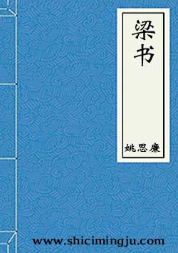

《梁书》
《梁书》包含本纪六卷、列传五十卷，无表、无志。它主要记述了南朝萧齐末年的政治和萧梁皇朝（502—557年）五十余年的史事。其中有二十六卷的后论署为“陈吏部尚书姚察曰”，说明这些卷是出于姚察之手，这几乎占了《梁书》的半数。姚思廉撰《梁书》，除了继承他父亲的遗稿以外，还参考、吸取了梁、陈、隋历朝史家编撰梁史的成果。 该书特点之一为引用文以外的部份不以当时流行的骈体文，而以散文书写。
本纪 共6卷
- 卷一·本纪第一·武帝上
- 卷二·本纪第二·武帝中
- 卷三·本纪第三·武帝下
- 卷四·本纪第四·简文帝
- 卷五·本纪第五·元帝
- 卷六·本纪第六·敬帝
列传 共50卷
- 卷七·列传第一·太祖张皇后等
- 卷八·列传第二·昭明太子等
- 卷九·列传第三·王茂等
- 卷十·列传第四·萧颖达等
- 卷十一·列传第五·张弘策等
- 卷十二·列传第六·柳惔弟忱等
- 卷十三·列传第七·范云等
- 卷十四·列传第八·江淹等
- 卷十五·列传第九·谢朏等
- 卷十六·列传第十·王亮等
- 卷十七·列传第十一·王珍国等
- 卷十八·列传第十二·张惠绍等
- 卷十九·列传第十三·宗刔 刘坦等
- 卷二十·列传第十四·刘季连等
- 卷二十一·列传第十五·王瞻等
- 卷二十二·列传第十六·太祖五王
- 卷二十三·列传第十七·长沙嗣王业子孝俨等
- 卷二十四·列传第十八·萧景弟昌等
- 卷二十五·列传第十九·周舍等
- 卷二十六·列传第二十·范岫等
- 卷二十七·列传第二十一·陆倕等
- 卷二十八·列传第二十二·裴邃等
- 卷二十九·列传第二十三·高祖三王
- 卷三十·列传第二十四·裴子野等
- 卷三十一·列传第二十五·袁等
- 卷三十二·列传第二十六·陈庆之等
- 卷三十三·列传第二十七·王僧孺等
- 卷三十四·列传第二十八·张缅等
- 卷三十五·列传第二十九·萧子恪等
- 卷三十六·列传第三十·孔休源等
- 卷三十七·列传第三十一·谢举等
- 卷三十八·列传第三十二·朱异等
- 卷三十九·列传第三十三·元法僧等
- 卷四十·列传第三十四·司马褧等
- 卷四十一·列传第三十五·王规等
- 卷四十二·列传第三十六·臧盾〔弟厥〕等
- 卷四十三·列传第三十七·韦粲等
- 卷四十四·列传第三十八·太宗十一王等
- 卷四十五·列传第三十九·王僧辩
- 卷四十六·列传第四十·胡僧祐等
- 卷四十七·列传第四十一·孝行
- 卷四十八·列传第四十二·儒林
- 卷四十九·列传第四十三·文学上
- 卷五十·列传第四十四·文学下
- 卷五十一·列传第四十五·处士
- 卷五十二·列传第四十六·止足等
- 卷五十三·列传第四十七·良吏等
- 卷五十四·列传第四十八·诸夷等
- 卷五十五·列传第四十九·豫章王综等
- 卷五十六·列传第五十·侯景
- 附录·梁书序